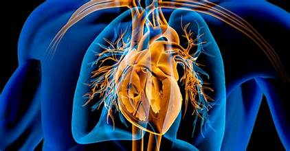

Hoe worden spieren sterker?
Als je sport, maak je kleine scheurtjes in je spieren. Tijdens rust herstellen die scheurtjes en worden je spieren sterker — dit heet supercompensatie. Het vergroten van spiercellen door training noemen we hypertrofie. Zonder rustdag raak je vermoeid en geblesseerd; dit heet overtraining. Voor herstel en spieropbouw is eiwit het belangrijkste macronutriënt, want eiwitten leveren de aminozuren om spiervezels te repareren. Een goede warming-up verhoogt je lichaamstemperatuur en doorbloeding, waardoor je de kans op blessures verkleint. Sport je met een slechte techniek, dan belast je spieren en gewrichten ongelijk, wat tot blessures leidt. Wissel je oefeningen regelmatig af, want variatie zorgt voor nieuwe aanpassingen en meer vooruitgang.
Wat doet je hart tijdens het sporten?
Zodra je beweegt, hebben je spieren meer zuurstof nodig en gaat je hart sneller kloppen. Bij iemand met een goede conditie is de rusthartslag laag, omdat het hart sterk genoeg is om met minder slagen toch genoeg bloed te pompen. Duurtraining zorgt ervoor dat je lichaam steeds beter wordt in het opnemen van zuurstof, waardoor je langer kunt sporten zonder buiten adem te raken. Als je heel hard traint, maakt je lichaam energie zonder zuurstof — daarbij ontstaat melkzuur, wat dat brandende gevoel in je benen veroorzaakt.
